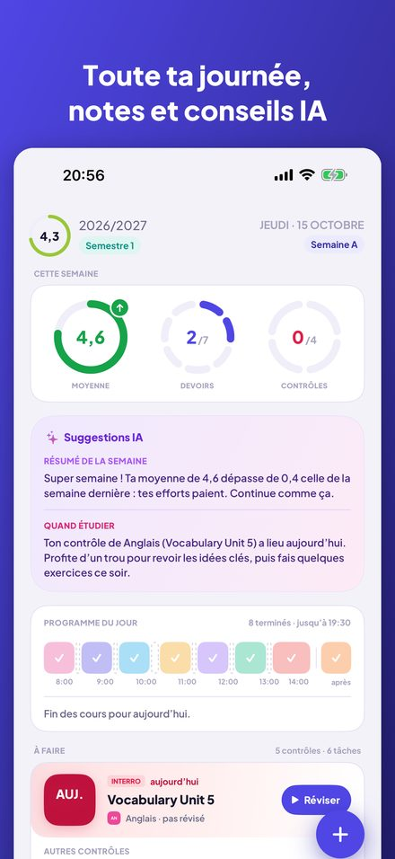
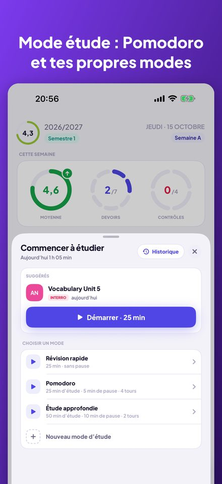
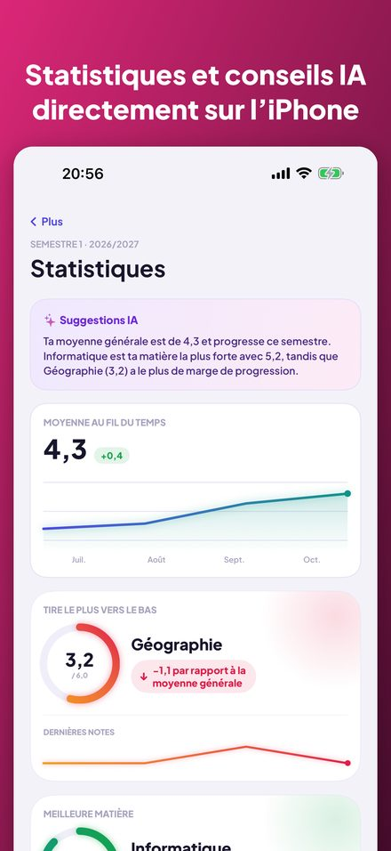
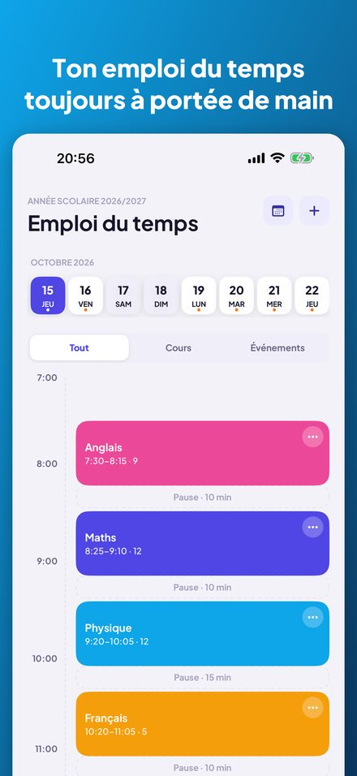
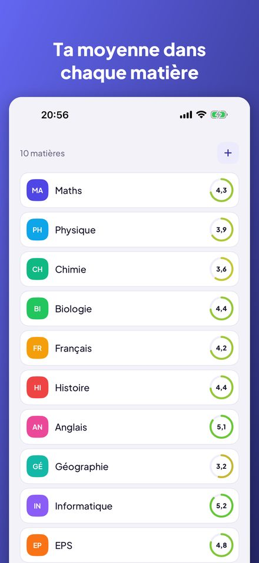
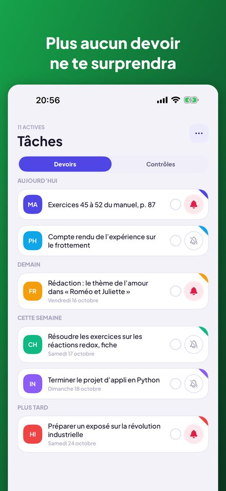

Kajet est un agenda pour l’école et les études supérieures. Toute ta journée d’un coup d’œil, des notes avec moyenne, des devoirs et contrôles avec rappels, et un minuteur d’étude avec Pomodoro. Sans compte, sans publicité.






Des anneaux pour la moyenne de la semaine, les devoirs et les contrôles, une frise des cours du jour et une liste « À faire » que tu coches d’un toucher.
Vue du jour et de la semaine, semaines A et B, cours annulés, remplacements, changements de salle et activités hors école avec un rappel pour partir.
Moyenne simple ou pondérée avec tes propres catégories, rattrapages et commentaires. Les statistiques montrent ta tendance, ta meilleure matière et celle qui te tire vers le bas.
Crédits ECTS, notes finales, moyenne pondérée par les ECTS et ton propre seuil de bourse, avec les notes qu’il te manque encore pour l’atteindre.
Regroupés par aujourd’hui, demain et cette semaine, avec des rappels la veille ou trois jours avant. Un contrôle devient une note en une étape.
Un minuteur avec tes propres modes : compte à rebours ou Pomodoro avec tours et pauses. Associe une séance à un contrôle et consulte ton historique.
Le prochain cours sur l’écran d’accueil et l’écran verrouillé. Demande à Siri ton prochain cours, les devoirs du jour ou ta moyenne, ou ajoute une note à la voix.
Pas de compte, pas de publicité, et tes données restent sur ton iPhone. Les conseils IA facultatifs fonctionnent entièrement sur l’appareil avec Apple Intelligence.
Pensée pour le système scolaire et universitaire polonais (notes de 1 à 6, échelle universitaire de 2,0 à 5,0, ECTS), mais utilisable partout. Disponible en anglais, polonais, allemand, français, espagnol, italien, japonais et chinois. Pour iPhone avec iOS 17 ou plus ; les conseils IA demandent iOS 26 et Apple Intelligence.